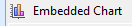
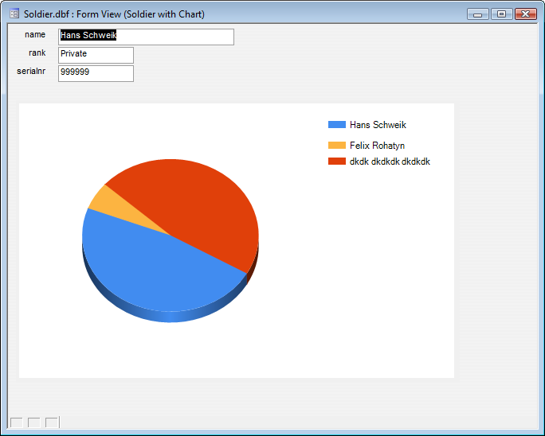

Using Charts on Forms
 In a desktop form, you can add a chart by selecting the Embedded Chart iconfrom the toolbox and dragging a rectangle for the chart on the form. The chart builder will come up, and you can configure it as described in Chart Control V11. All form variables will be available to the chart.
You can preview the chart and adjust the parameters until you are satisfied with its appearance. In preview mode the "URL" or "URI" generated to describe the current chart can be copied and saved for future use.
Save the form after pressing OK on the chart builder.
If you want to modify the chart after it has been saved to the form, right-click on the chart and select SuperControl Designer... from the context menu.
